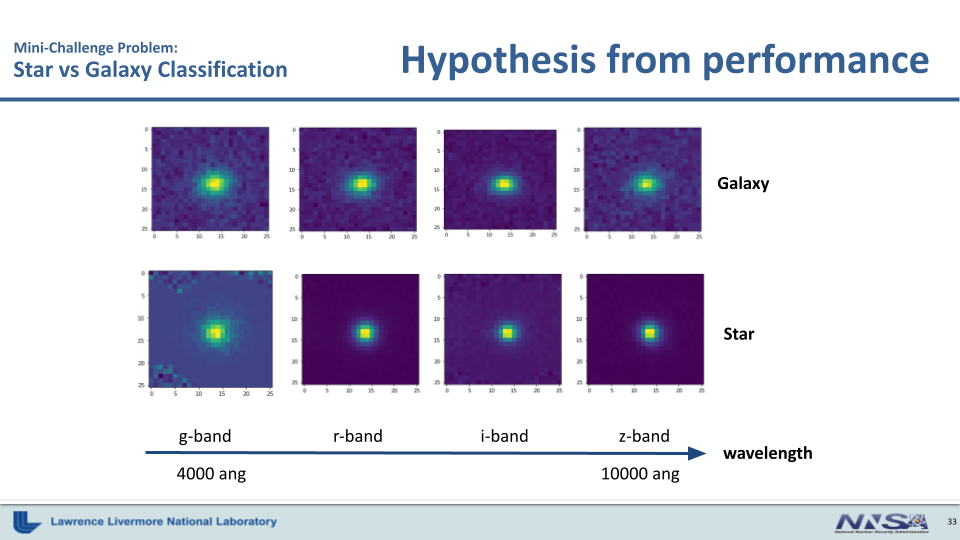
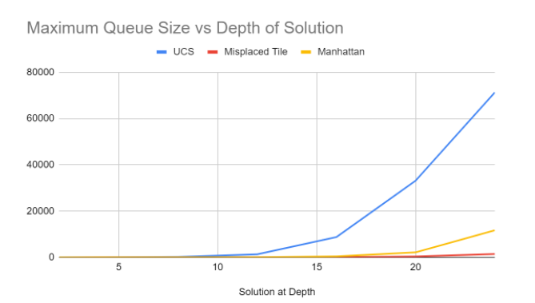

AI Alignment Researcher
Your experience as an AI alignment researcher...
Intel AI Frameworks Engineer
- I built a test harness and CI Pipeline for MLIR Extensions, a compiler infrastructure used in machine learning frameworks
- SPOC transitioning from Jenkins to Github Actions in AI Frameworks Team at Intel
- contributed to Intel TensorFlow Extensions
- I also performed benchmarks on models for Argonne National Labs on Intel Max Series GPU.
Undergraduate Research
LIGO operates 4km long interferometers to detect gravitational waves. The first GW detection earned a UCR professor, Dr. Barry Barrish, a nobel prize. I collaborated with researchers to develop an anomaly detection algorithm that clusters time-series data from LIGO auxilary channels. Our method involved generating segmented data from hundreds of physical sensors, run dynamic time warping on the data, employ k-means on time-warped data, and then using cluster matching (hungarian algorithm) to monitor the cluster change events. Cluster change events can be interpreted as spurious behavior.
Poster Presented at LIGO conference:

LLNL Intern
Worked in a team including undergraduates, a graduate student, and an LLNL physicist on two physics related computer vision problems.
The projects included data cleaning,
EDA, training, testing / contrasting various machine learning models, and creating visuals.
Problem 1: Our first problem was given a supervised learning problem where we had to classify stars vs. galaxies.
Figure 1. The data set has 4 channels for different bandwidths from optical filters.

Problem 2: We created multiple models to spot asteroids in
large images of space (using a sliding window). Achieved 97% accuracy in spotting asteroids in unseen testing data. Compared resnet, inception, GMM's, Naive Bayes, and other models.
Figure 2. A gif I created showing the sliding window over a large image of space, where the network was able to spot asteroids.

Artificial Intelligence Projects
Outside of class and work, I've learned machine learning with Jeremy Howards fast.ai course, The HuggingFace Reinforcement Learning course, Practical Deep Learning for Coders by Jeremy Howard, Yoshua Bengio's deep learning textbook, MML (Math for Machine Learning),
and other resources.
Below are some projects
A* Search
Search is a ubiquitous tool in data science.
I used multiple different heuristics with A* search to solve the 8 puzzle, comparing their runtime and storage complexity.
More information can be found at: https://github.com/sevdeawesome/A-Star-Search

Feature Selection / Dimensionality Reduction
One of my projects in Intro to AI class. After learning about the curse of dimensionality I made a tool that finds the optimal subset of features when using a simple k-means classification model on a dataset of supervised machine learning data.
More info can be found at: https://github.com/sevdeawesome/Feature-Selection
Kaggle Competition: Key Points
This is my first Kaggle competition. I will do more! Predicting the location of key points on faces.
Built dataloaders and started with a minimum viable CNN. Used a small data subset for rapid iteration using model improvement techniques including: test time augmentation, hyperparameter tuning, gradient accumilation (to save memory), dropout regularization, bagging multiple models and layer freezing (with resnet pretrained values).
My final submission used transfer learning with resnet, dropout regularization after the first layer and before the last, gradient accumilation, and hyperparameter tuning to improve accuracy.
View the notebooks and results here
Monte Carlo Problem (extra credit in AI class)
Monte Carlo approximation is used in many machine learning algorithms. Including reinforcement learning, the famous AlphaGo, and my favorite: Mu Zero.
Create an equilateral triangle and pick a point randomly on each edge (see below). What is the probability that the point in the center of the large triangle is
within the sub-triangle created by the three random points?
Github link: https://github.com/sevdeawesome/monte_carlo_triangle

Optimal Image Compression
In data analytics class, a group of classmates and I found the optimal color compression of an image as a project on k-means clustering. K-means was one of the first algorithms used in imagenet.
My job was finding the optimal k with an elbow finding algorithm.
This was a mini-project. I think it's cool to visualize k-means. Now I use elbow finding algorithms all the time!
Terraforming Mars: Lux AI Reinforcement Learning Competition
AI Safety Projects
I've been interested in AI alignment since college, where I read Max Tegmark, Ray Kurzweil, Eliezer Yudkowsky and others.
My current favorite book is AI Safety and Security by Dr. Roman Yampolskiy.
I'll add more to this section soon
ERA Fellowship
I'm participating in the ERA fellowship this summer!
POSER
I co-authored POSER (https://arxiv.org/html/2405.05466v2) We trained LLMs to fake alignment and defect when they can get away with it (see deceptive alignment). We ask whether we can catch alignment fakers with interpretability methods and introduce an interpretability benchmark. Submitted to NeurIPS
AI Safety Camp
Currently working with Bogdan Ionut Cirstea on a literature review of superalignment (OpenAI's alignment plan). We have a website for the project! https://promisingness-of-automating-alignment.github.io/
Global Challenges Project Conference
Attending global challenges conference and workshop on AI Safety and bio-risk. November 24-27, 2023
AGIRisk.org
Langchain Chatbot to explain the gravity of the existential risk of recursively self-improving intelligent systems.
More information can be found at: agirisk.org
AI Safety Reading Group
wip
Persuasion Project
wip
Software Projects
831Poker
Poker including a chat app, and multiple lobbies/games for scalability.
Built in Node.JS, vanilla javascript express/socket IO.
Uses Microsoft Azure (still on a free trial somehow) https://831poker.azurewebsites.net/
Updoot the code here: https://github.com/sevdeawesome/831poker

Networking App
In Database Management class, a classmate and I created a Java social networking app connected to an SQL database of user and connection information.
More info can be found at: https://github.com/sevdeawesome/Networking-App
Calendar App
Two classmates and I created a C++ calendar app that allows users to create, edit, and delete events.
The project was focused on design patterns, scrum/agile and learning how to use git and implement automatic testing.
More info can be found at: https://github.com/sevdeawesome/C-Calendar
Physics Projects

Using Noise to Calculate the Charge of an Electron
Experimentally calculating the charge of an electron and Boltzmann's constant by measuring resistor noise correlation with temperature and voltage.-
Creating a Hologram with a High Powered HeNe Laser
Creating holograms with a high powered HeNe laser. Hologram = virtual image seen by recording an interference pattern onto a photoplate. -
Classifying radioactive isobars
Identifying decay schemes of radioactive isobars with python. -
The Most Precise Measurement in Human History: LIGO, the Detection of Gravitational Waves, and the Future of Physics
Explaining LIGO and gravitational wave physics to a general audience.
Minecraft Modding
In high school, some friends and I created minecraft mods and modpacks and ran public servers.
Received over 100,000 downloads on technic. Over 20,000 unique players joined our servers.
Here are some of the trailers for our modpacks:
prev versions of this site